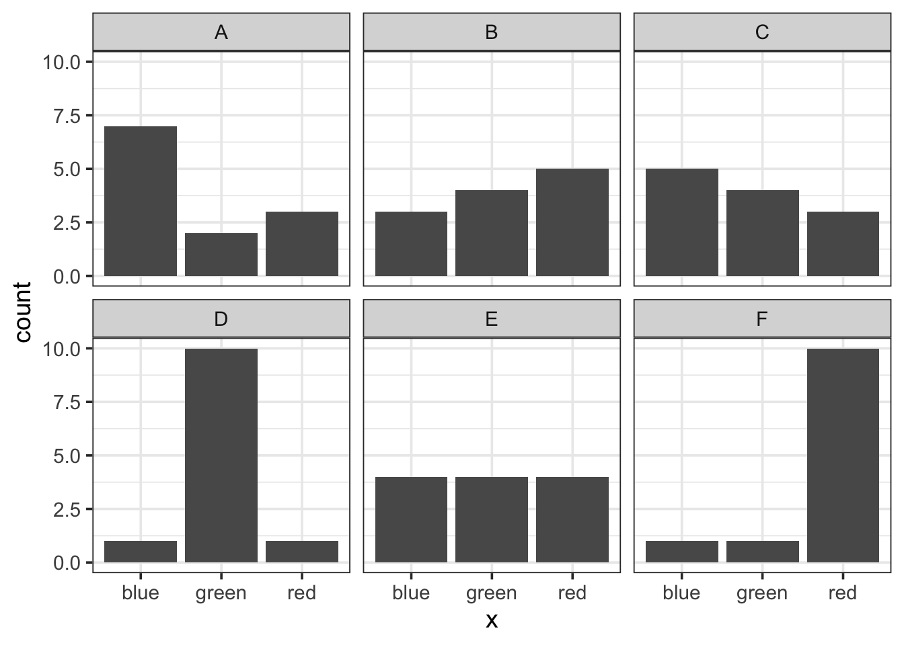
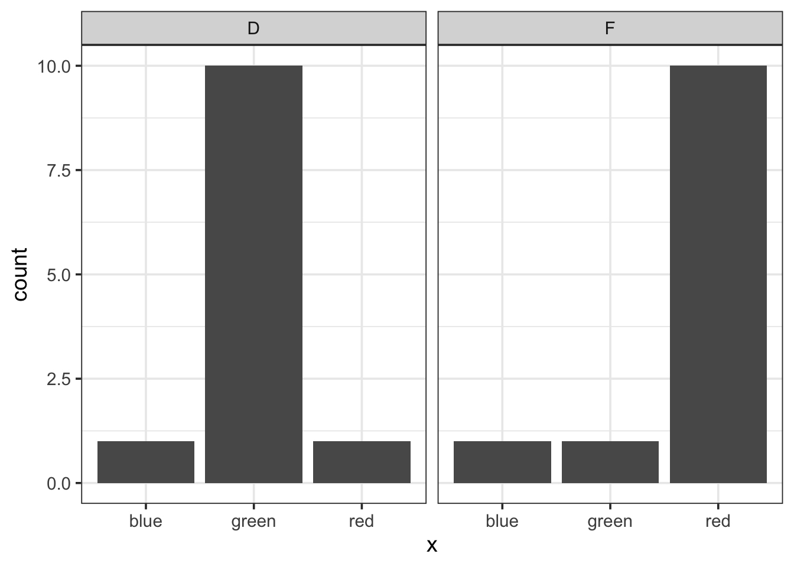
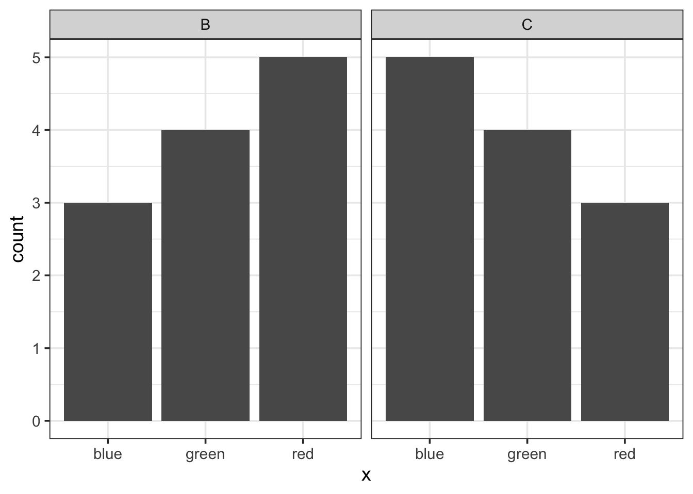

Hypothesis Tests II
Agenda
- Announcements
- Concept Questions
- Break
- PS 14: Hypothesis Tests II
Announcements
- RQ: Wrong By Design due Wed/Thu night at 11:59pm
. . .
- Quiz 3 is in the first half of class on Thursday/Friday.
. . .
- Problem Set 14 is due the Tuesday after break.
Concept Questions
Which pair of plots would have the greatest chi-squared distance between them? (consider one of them the “observed” and the other the “expected”)
01:00
This question recalls the introduction of a new summary statistic in the notes: the chi-squared. It is used to measure the distance between two distributions of categorical variables. The pair with the highest statistic is D and F. The important mathematical intuition to have here is that the statistic adds together every squared normalized difference, so one very large difference can inflate the statistic.
Chi-squareds Compared

\[ \frac{(1-1)^2}{1} + \frac{(10 - 1)^2}{1} + \frac{(1 - 10)^2}{10} \\ 0 + 81 + \frac{81}{10} = 89.1 \]

\[ \frac{(3-5)^2}{5} + \frac{(4-4)^2}{4} + \frac{(5-3)^2}{3} \\ \frac{4}{5} + 0 + \frac{4}{3} = 2.13 \]
An In-class Experiment
In order to demonstrate how to conduct a hypothesis test through simulation, we will be collecting data from this class using a poll.
You will have only 15 seconds to answer the following multiple choice question, so please get ready at pollev.com…
This sets up a discussion of how to set up a hypothesis test that p = .5.
This is based on a series of experiments that show a link between sounds and shapes in people’s minds - sharper shapes correspond to sharper sounds (k, t) and rounder shapes to rounder sounds (m, b). Read more about it here: https://en.wikipedia.org/wiki/Bouba/kiki_effect.
You conduct the experiment on the students using a poll question, then you calculate a proportion, then entertain the notion that linking names to shapes is meaningless, so people were choosing randomly, then use that to motivate the hypothesis test that p = .5.

The two shapes above have simple first names:
- Booba
- Kiki
Which of the two names belongs to the shape on the left?
00:15
This poll everywhere question is set up to record the counts of each category and display the total number of responses in the upper right. This allows you to discuss the results either in terms of a binomial or in terms of a proportion.
Steps of a Hypothesis Test
- Assert a model for how the data was generated (the null hypothesis)
- Select a test statistic that bears on that null hypothesis (a mean, a proportion, a difference in means, a difference in proportions, etc).
- Approximate the sampling distribution of that statistic under the null hypothesis (aka the null distribution)
- Assess the degree of consistency between that distribution and the test statistic that was actually observed (either visually or by calculating a p-value)
1. The Null Hypothesis
- Let \(p_k\) be the probability that a person selects Kiki for the shape on the left.
- Let \(\hat{p}_k\) be the sample proportion of people that selected Kiki for the shape on the left.
What is a statement of the null hypothesis that corresponds to the notion the link between names and shapes is arbitrary?
01:00
2. Select a test statistic
\[\hat{p}_k = \frac{\textrm{Number who chose "Kiki"}}{\textrm{Total number of people}}\]
. . .
Note: you could also simply \(n_k\), the number of people who chose “Kiki”.
A follow-up question to ask: “For our class, what would we expect this number to be if \(p_k = .5\)?”
It should be half the number of students who responded to the poll.
3. Approximate the null distribution
Our technique: simulate data from a world in which the null is true, then calculate the test statistic on the simulated data.
Which simulation method(s) align with the null hypothesis and our data collection process?
01:00
A, C, and E all work.
Simulating the null using infer
Code
library(tidyverse)
library(infer)
# update these based on the poll
n_k <- 40
n_b <- 20
shapes <- data.frame(name = c(rep("Kiki", n_k),
rep("Booba", n_b)))
shapes |>
specify(response = name,
success = "Kiki") |>
hypothesize(null = "point", p = .5) |>
generate(reps = 1, type = "draw") |>
calculate(stat = "prop")- have students open laptops and an R script to code along.
- copy and paste the code cell from the slides into RStudio
- replace n_k and n_b with the values from your poll.
- “break the pipe” to show what happens at every stage.
- run several pipelines with reps = 1 to show it changing.
- set reps to 500 to show the full collection of p-hats.
4. Assess the consistency of the data and the null
Code
null <- shapes |>
specify(response = name,
success = "Kiki") |>
hypothesize(null = "point", p = .5) |>
generate(reps = 500, type = "draw") |>
calculate(stat = "prop")
obs_p_hat <- shapes |>
specify(response = name,
success = "Kiki") |>
# hypothesize(null = "point", p = .5) |>
# generate(reps = 500, type = "simulate") |>
calculate(stat = "prop")4. Assess the consistency of the data and the null
Code
null |>
visualise() +
shade_pvalue(obs_p_hat, direction = "both")
null |>
get_p_value(obs_p_hat, direction = "both")The p-value
What is the proper interpretation of this p-value?
01:00
The Bouba / Kiki Effect
Break
05:00
Problem Set 14: Hypothesis Testing II
50:00